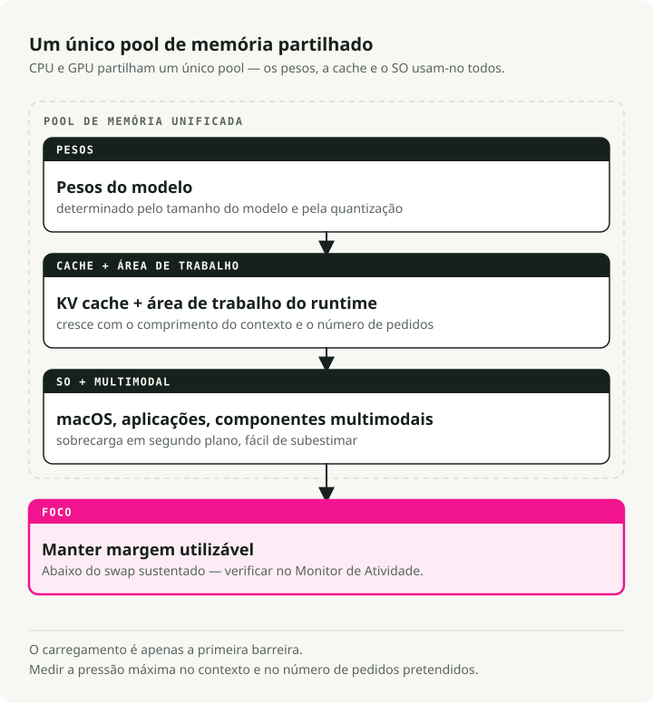
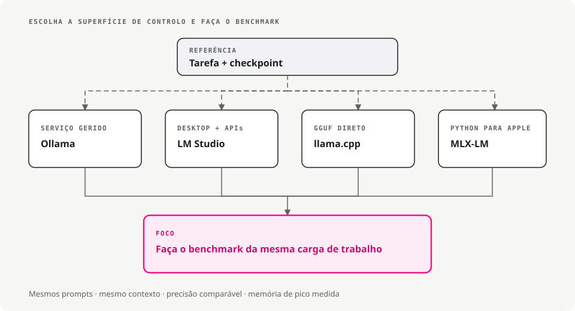

Tradução automática
Este artigo foi traduzido automaticamente a partir da versão original em inglês.
LLMs Locais no macOS: Ollama, LM Studio, llama.cpp, MLX e Apple Silicon
Enviar cada pedido para uma API de terceiros tornou-se algo cansativo, especialmente quando metade dos pedidos é do tipo “reescreva este parágrafo” ou “qual é o esquema JSON para isto?”. Os LLMs locais resolveram esse problema no meu Mac com Apple Silicon mais rápido do que eu esperava. Um modelo de 7B em quantização de 4 bits funciona perfeitamente num MacBook de 16 GB, e todo o processo acontece diretamente no teclado.
Portanto, a questão em aberto é qual aplicação utilizar para executá-los. Ollama, LM Studio, llama.cpp, MLX e algumas outras ferramentas utilizam motores de inferência semelhantes e os mesmos ficheiros GGUF. A diferença reside no nível de complexidade entre o utilizador e o modelo: por um lado, basta fazer duplo clique e começar a escrever; por outro, é preciso compilar a partir do código fonte e consultar a documentação correspondente.
TL;DR: Utilize o Ollama para uma API local simples, o LM Studio para uma interface gráfica e um endpoint compatível com a OpenAI, o llama.cpp quando precisar de controlo direto sobre a inferência em formato GGUF, e o MLX quando desejar fluxos de trabalho em Python nativos para Apple Silicon.
Conceitos fundamentais para LLMs locais no macOS
- Inferência: execução do modelo para gerar texto.
- Quantização (GGUF): técnica utilizada para reduzir o tamanho do modelo com perda mínima de qualidade. Irá encontrar nomes de ficheiros como
llama-3-8b-Q4_K_M.gguf. OQ4part refere-se à quantização de 4 bits, que utiliza muito menos RAM em comparação com os pesos completos de 16 bits. - Apple Silicon (Metal): Os chips da série M da Apple partilham a RAM entre o CPU e o GPU (a Apple chama a isso “Memória Unificada”). É por isso que um MacBook com 32 GB ou 64 GB consegue carregar modelos que exigiriam um GPU dedicado e dispendioso num PC.
Pré-requisitos
- Hardware: um Mac com Apple Silicon (de M1 a M4) é o que se deve procurar. Os Macs Intel também funcionam, mas são significativamente mais lentos.
- RAM:
- 8GB: suficiente para modelos pequenos (Mistral 7B, Llama 3 8B).
- 16GB+: ideal para modelos maiores e para multitarefa.
- Espaço em disco: os modelos ocupam bastante espaço. Planeie cerca de 10-20GB para ter uma biblioteca básica funcional.

1. Ollama – A Opção “Simples e Eficaz”
Transferir: ollama.com
Considere o Ollama como o “Docker para LLMs”. Ele encapsula o llama.cpp o motor, integrado num pacote nativo para macOS, carrega os modelos conforme necessário e direciona o processamento automaticamente para o Metal. Basta instalá-lo, executar uma única instrução e já pode começar a conversar. Este é o caminho mais simples se o que procura é apenas um LLM funcional e um ponto de extremidade HTTP para ligar o seu código.
Fluxo de trabalho de exemplo
# 1. Download and run Llama 3 (it auto-downloads if needed)
ollama run llama3
# 2. Use it in your code via the local API
curl http://localhost:11434/api/generate -d '{
"model": "llama3",
"prompt": "Explain quantum computing to a 5-year-old",
"stream": false
}'
Vantagens e desvantagens
| ✅ Vantagens | ❌ Condições de falha |
|---|---|
Configuração mais simples (arrastar e soltar) .dmg) |
A aplicação principal é de código fechado. |
Clean CLI (interfície de linha de comandos)ollama list, ollama pull) |
Controlo menos detalhado sobre os parâmetros de geração |
| Grande biblioteca de modelos pré-configurados |
2. LM Studio - O Explorador Visual
Transferência: lmstudio.ai
LM Studio é a opção focada em interfaces gráficas. Disponibiliza um navegador no estilo App Store para pesquisar diretamente na HuggingFace, suporta o formato MLX da Apple juntamente com o GGUF (que pode ser mais rápido em alguns Macs), e oferece um servidor local compatível com a OpenAI. Por isso, o código de cliente existente que já se comunica com a OpenAI funciona, na sua maioria, sem alterações.
# Using the official LM Studio SDK
from lmstudio import LMStudio
client = LMStudio()
response = client.complete(
model="llama-3-8b",
prompt="Write a haiku about debugging."
)
print(response.content)
Vantagens e desvantagens
| ✅ Vantagens | ❌ Contras |
|---|---|
| Interface refinada e de fácil utilização | GUI é de código fechado |
| Suporte nativo tanto para modelos GGUF como para modelos MLX | Transferência de ficheiro maior (~750MB) |
| RAG integrado (conversar com os seus ficheiros PDF) |
3. llama.cpp – A Ferramenta para Utilizadores Avançados
Repositório: github.com/ggml-org/llama.cpp
Trata-se do motor que quase todas as outras ferramentas utilizam como base. Se pretender o máximo desempenho, as funcionalidades mais recentes assim que são lançadas, ou integrar um LLM na sua própria aplicação em C++, este é o ponto de partida. É baseado em hardware bruto e leve, mas o custo é ter de gerir tudo por si mesmo: downloads, formatos e dezenas de opções da linha de comandos.
Fluxo de trabalho de exemplo
# 1. Install via Homebrew
brew install llama.cpp
# 2. Download a model manually (e.g., from HuggingFace)
huggingface-cli download TheBloke/Llama-3-8B-Instruct-GGUF --local-dir .
# 3. Run inference with full control
llama-cli -m llama-3-8b-instruct.Q4_K_M.gguf \
-p "Write a python script to sort a list" \
-n 512 \
--temp 0.7 \
--ctx-size 4096
Vantagens e desvantagens
| ✅ Vantagens | ❌ Contras |
|---|---|
| Controlo total sobre cada parâmetro | Curva de aprendizagem acentuada (apenas CLI) |
| Licenciado sob MIT (código aberto) | Gestão manual de modelos |
| Muito leve (<30MB) |
4. GPT4All – Privacidade em Primeiro Lugar e RAG
Transferência: gpt4all.io
GPT4All assenta em duas premissas fundamentais: privacidade e documentos. A sua funcionalidade principal, o LocalDocs, permite indicar à aplicação uma pasta com ficheiros PDF, notas ou código, permitindo assim comunicar diretamente com o seu conteúdo. Tudo é processado offline, sem qualquer envio de dados de telemetria. É a forma mais simples de ter uma configuração RAG funcional no seu dispositivo, sem necessidade de escrever qualquer código.
Vantagens e desvantagens
| ✅ Vantagens | ❌ Contras |
|---|---|
| LocalDocs RAG funciona bem desde o primeiro uso. | Apenas interface gráfica (sem modo sem cabeçalho) |
| Completamente offline e privado | Uso de recursos superior em comparação com o Ollama |
| multiplataforma (Mac, Windows, Linux) |
5. KoboldCPP – Para Contadores de Histórias
Repositório: github.com/LostRuins/koboldcpp
Um fork de llama.cpp dirigido à escrita criativa e a RPGs no estilo de mesa. Funciona como uma aplicação web local, dispondo de ferramentas para geração de texto extenso: “Informações do Mundo”, memória de personagens e técnicas de consistência narrativa que visam manter o modelo alinhado ao enredo mesmo ao longo de milhares de tokens. O público-alvo são escritores e pessoas que organizam RPGs baseados em texto; se o seu principal objetivo for bate-papo ou programação, a interface padrão parecerá pouco funcional.
Fluxo de trabalho exemplar
# 1. Download the single binary
wget https://github.com/LostRuins/koboldcpp/releases/latest/download/koboldcpp-mac.zip
# 2. Run it (launches a web server)
./koboldcpp --model llama-3-8b.gguf --port 5001 --smartcontext
Vantagens e desvantagens
| ✅ Vantagens | ❌ Condições inválidas |
|---|---|
| Ferramentas poderosas para escrita criativa | UI de nicho (não é ideal para programação/conversação) |
| Executável de ficheiro único (sem instalação) | Licença AGPL (restritiva para uso comercial) |
Menção honrosa: MLX-LM
Se for um desenvolvedor em Python com Apple Silicon, dê uma olhada em MLX-LM da Apple. Trata-se de uma framework otimizada para os chips da série M e, em hardware adequado, costuma ser a forma mais rápida de executar um modelo localmente. A desvantagem é que é menos amigável do que o Ollama: mais código em Python e menos restrições.
Resumo: qual ferramenta é a mais adequada para si?
Uma árvore de decisão rápida:

Tabela de comparação rápida
| Ferramenta | Interface | Dificuldade | Melhor funcionalidade |
|---|---|---|---|
| Ollama | CLI / Barra de Menu | ⭐ (Fácil) | Experiência de “simplesmente funciona” |
| LM Studio | GUI | ⭐ (Fácil) | Descoberta de modelos e interface de utilizador |
| GPT4All | GUI | ⭐ (Fácil) | Chat com documentação local (RAG) |
| KoboldCPP | Interface Web | ⭐⭐ (Médio) | Ferramentas de escrita criativa |
| llama.cpp | CLI | ⭐⭐⭐ (Difícil) | Desempenho bruto e controlo |
O que realmente escolher
- Comece com o Ollama se o que pretende é ter algo em funcionamento já hoje.
- Recorra ao LM Studio se preferir primeiro explorar os modelos de forma visual.
- Se precisar de controlo total sobre o processo de inferência, selecione llama.cpp.
Principais Conclusões
- O Ollama é o caminho mais rápido para ter um servidor de modelos local para desenvolvimento.
- O LM Studio é a melhor opção quando se procura uma interface gráfica de desktop e uma exploração simples dos modelos.
- O llama.cpp oferece o controlo mais direto sobre modelos GGUF e flags de execução de baixo nível.
- O MLX é o caminho nativo da Apple Silicon para quem se sente à vontade a escrever em Python e a utilizar formatos de modelos MLX.
Referências
- Ollama no GitHub - tempo de execução do modelo local e API. Documentação do LM Studio - GUI e servidor local para LLMs. llama.cpp no GitHub - Tempo de execução para inferência de GGUF. Documentação Apple MLX - Framework de arrays para Apple Silicon.